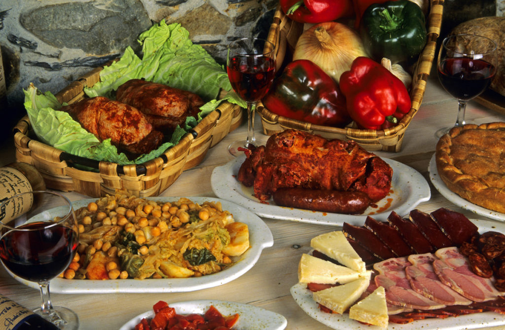
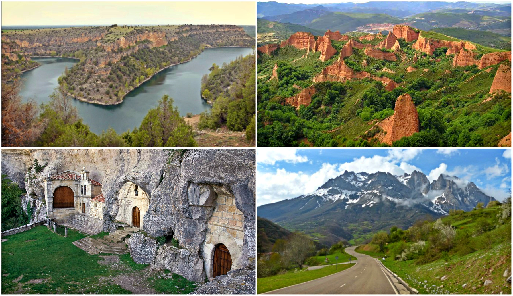

León, capital de la provincia de León, es una ciudad del noroeste de
España situada junto al río Bernesga. La ciudad alberga muchas iglesias y
catedrales que destacan por su arquitectura y arte. Entre ellas se
encuentra la catedral de León, de estilo gótico, que data del siglo XIII y
destaca por sus torres y arbotantes. La basílica románica de San Isidoro,
del siglo X, es conocida por sus frescos y tumbas reales.
Cultura
UNA PROVINCIA FORJADA EN EL CRISOL DEL TIEMPO :
León, cruce de rutas y caminos, tiene un formidable patrimonio
histórico fruto de la sucesión de gentes que pisaron estas tierras.
Astures, romanos, suevos, visigodos, árabes, reinos cristianos… todos
contribuyeron a escribir una historia cuyas huellas son palpables en
el carácter de sus actuales habitantes y en los monumentos que
embellecen la provincia
Gastronomia
CASTILLA Y LEON, LA CUNA DE LA GASTRONOMIA ESPAÑOLA :
Las gastronomías castellana y leonesa destacan por los guisos y
asados, los vinos de gran calidad, la variedad de sus dulces, los
embutidos y los quesos. Incluso en determinadas zonas de estas dos
regiones pueden encontrarse una importante producción de manzanas,
turrones, etcétera.

Sitios de interes
LA TIERRA DEL PAISAJE CAMBIANTE :
Castilla y León es una comunidad autónoma española, referida como
«comunidad histórica y cultural» en su Estatuto de Autonomía. Se
constituyó como preautonomía en 1978 y adquirió su estatus de
comunidad autónoma en 1983.
